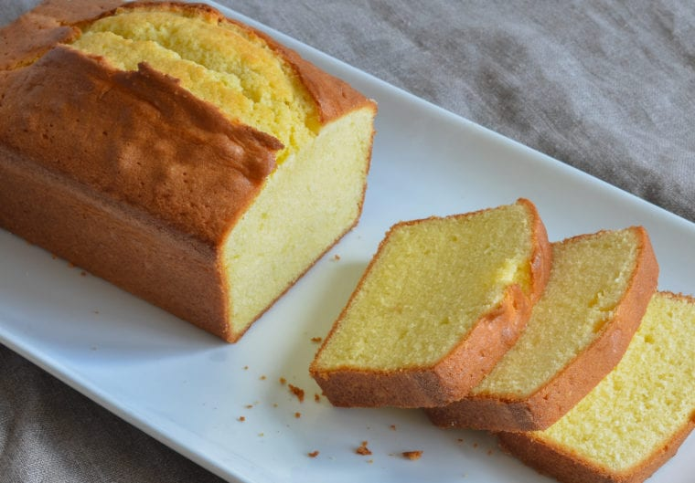

Pound Cake

Tradional Pound Cake
Pound cake is like the little black dress of dessert. It’s elegant in its simplicity;
you can dress it up or down; and it’s wonderful anytime, anywhere. My all-time favorite
recipe comes from The Cake Bible by Rose Levy Beranbaum, a classic and essential cookbook
for all bakers. While most traditional pound cake recipes call for equal weights of flour,
sugar, eggs, and butter, Rose’s recipe incorporates milk, lots of extra butter, and a
little baking powder.
The result is a rich and buttery yet fluffy pound cake that melts in your mouth.
Rose writes: “This cake not only has a silky-smooth dissolving texture similar to
famous Sara Lee pound cake but also the incomparable moist, butter flavor of a
home-baked cake. It’s excellent keeping qualities make it ideal for slicing ahead and
bringing on picnics.”
Ingridents
- 3 tablespoons milk (skim, low fat, or whole)
- 3 large eggs
- 1-1/2 teaspoons vanilla extract
- 1-1/3 cups cake flour, spooned into measuring cup and leveled with a straight edge
- 3/4 cup sugar
- 3/4 teaspoon baking powder
- 1/4 teaspoon salt
- 13 tablespoons unsalted butter, softened (no need to cut it in pieces)
Instructions
- Preheat the oven to 350°F and set an oven rack in the middle position.
Lightly grease an 8-in x 4-in x 2½-inch loaf pan with butter or nonstick
cooking spray. Dust with flour, shaking off any excess. (Alternatively,
use a nonstick cooking spray with flour in it, such as Baker’s Joy or Pam
Baking Spray with Flour.)
- In a medium bowl, whisk together the milk, eggs, and vanilla until just combined.
- In the bowl of an electric mixer fitted with the paddle attachment (or with a hand mixer),
place the flour, sugar, baking powder, and salt. Mix on low speed for about 30 seconds or
until blended. Add the butter and half of the egg mixture. Mix on low speed until the dry
ingredients are moistened. Increase the mixer speed to medium (high speed if using a hand mixer)
and beat for one minute. Scrape down the sides of the bowl. Add the remaining egg mixture, in 2
separate additions, beating about 30 seconds after each addition to combine. Do not over-mix.
(The batter may have a slightly curdled or grainy appearance -- that's okay.)
- Scrape the batter into the prepared pan and smooth the top with an offset spatula or the back of a spoon.
Bake for 50 to 55 minutes, or until the cake is golden brown and a thin wooden skewer or toothpick inserted
into the center of the cake comes out clean.
- Place the cake on a wire rack to cool for about 10 minutes. Then remove the cake from the pan and cool
completely on a wire rack. Wrap the cooled cake in plastic wrap or store in a large sealable plastic bag.
- The wrapped pound cake will keep for several days at room temperature, for one week when refrigerated.
- Freezer-Friendly Instructions: The cake can be frozen for up to 3 months. After it is completely cooled,
double-wrap it securely with aluminum foil or plastic freezer wrap, or place it in a heavy-duty freezer bag.
Thaw overnight on the countertop before serving.